-
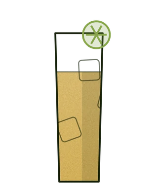
Kyiv Mule by Ukrainian Nemiroff Vodka 275
We use a special ginger lemonade with pepper - spicy but not spicy. Combined with quality vodka and lime juice, the best drinkPoužíváme speciální zázvorovou limonádu s pepřem - pikantní, ale ne pikantní. V kombinaci s kvalitní vodkou a limetkovou šťávou nejlepší nápojМи використовуємо особливий імбирний лимонад з перцем-пряно, але не гостро. У поєднанні з якісною горілкою та лаймовим соком найкращий напій
-
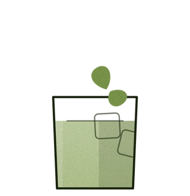
Gin Basil Smash 314
The Basil Smash is a refreshing and aromatic cocktail built on a base of gin and fresh basil. Its vibrant herbaceous flavor beautifully complements citrus notes, making it an ideal drinkBasil Smash je osvěžující a aromatický koktejl, jehož základem je gin a čerstvá bazalka. Jeho výrazná bylinná chuť se skvěle snoubí s citrusovými tóny, což z něj činí ideální nápojBasil Smash – це освіжаючий та ароматний коктейль, що базується на джині та свіжому базиліку. Його яскравий трав'яний смак чудово поєднується з цитрусовими нотками, створюючи ідеальний напій
-
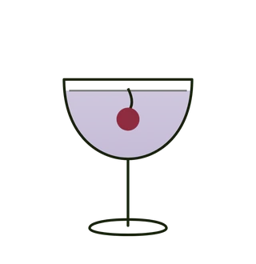
Aviation Cocktail 340
Classic cocktail of gin, violet liqueur The Bitter Truth and Luxardo MaraschinoKlasický koktejl ginu, fialkového likéru The Bitter Truth a Luxardo MaraschinoKласичний коктейль з джину, фіалкового лікеру The Bitter Truth і Luxardo Maraschino
-
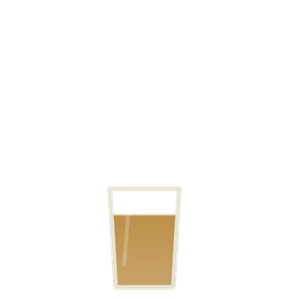
ALL Shot 185
-
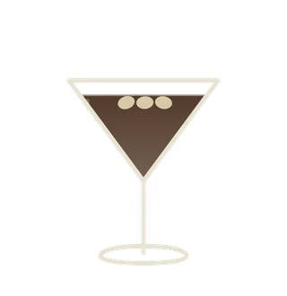
Espresso Martini 299
Vodka and strong iced espresso, as well as coffee liqueur KahluaVodka a silné ledové espresso, stejně jako kávový likér KahluaГорілка і міцний льодяний еспресо , а також кавовий лікер Kahlua
-
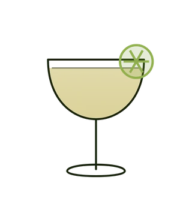
Tajin Margarita Cocktail 299
.Our take on the classic Margarita náš pohled na klasickou margaritu,наша версія класичної Маргарити
-
SATYR Cola 285
Cola, 5 year old spiced rum from Panama - Abuelo, Velvet Falernum rum liqueur from Barbados, Coffee liquor Kahlua, Brut or CavaCola, 5letý kořeněný rum z Panamy - Abuelo, rumový likér Velvet Falernum z Barbadosu, kávový likér Kahlua, Brut nebo CavaCola,пряний 5-ти річний панамський ром Abuelo ,ромовий лікер Velvet Falernum з Барбадосу, кавовий лікер Kahlua , Brut або -ж Cava
-
Negroni 299
A classic combination of dry gin with the bitterness of Campari and sweet French Dolin vermouthklasická kombinace suchého ginu s hořkostí Campari a sladkým francouzským Dolin vermutemкласичне поєднання сухого джину з гіркотою Campari та солодкого французького вермуту Dolin
-
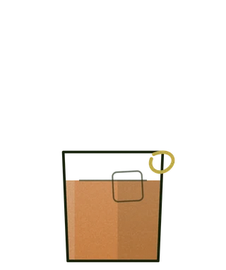
New York Sour 295
Bourbon and lemon juice, a bit of foam hiding some red wine underneathBourbon a citronová šťáva, trocha pěny skrývající pod sebou trochu červeného vínaБурбон і лимонний сік, трохи піни, під якою ховається деяка кількість червоного вина
-
Slava Ukraini!!! Shot 179
We are Ukrainians and we are proud of it, this shot in the color of the Ukrainian flag is orange juice, violet liqueur and vodka.Jsme Ukrajinci a jsme na to hrdí, tenhle panák v barvě ukrajinské vlajky je pomerančový džus, fialkový likér a vodka.Ми українці і пишаємося цим, цей шот у колір Українського прапора – апельсиновий сік, фіалковий лікер та горілка.
-
Dark&Stormy 285
️ Dark & Stormy ️ A Bermudian classic with a fiery twist. Rich dark rum, fresh lime, and natural French Pimento ginger beer infused with chili pepper. The perfect balance of sweet and spicy. Dark Rum Natural French Pimento Ginger Beer (with pepper) Lime Limetka️ Dark & Stormy ️ Bermudská klasika s novým temperamentem. Bohatý tmavý rum, svěží limetka a přírodní francouzské zázvorové pivo Pimento s přídavkem chilli pepře. Dokonalá rovnováha sladkosti a ohnivé ostrosti. Tmavý rum Přírodní francouzské zázvorové pivo Pimento (s pepřem)️ Dark & Stormy ️ Класика з Бермудських островів із новим характером. Насичений темний ром, свіжість лайма та натуральне французьке імбирне пиво Pimento з додаванням перцю. Ідеальний баланс солодкості та вогняної гостроти. Темний ром Натуральне французьке імбирне пиво Pimento (з перцем) Лайм
-
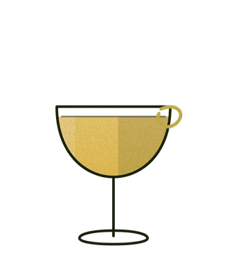
Bee's Knees 295
Bees Knees cocktail with Gin, honey, and lemon. The name comes from prohibition-era slang meaning "the best".Koktejl včelích kolen s ginem, medem a citronem. Název pochází z prohibičního slangu znamenajícího „nejlepší“.Коктейль Bees Knees з джином, медом і лимоном. Назва походить від сленгу часів заборони, що означає «найкращий».
-
Adriatico Amaretto Sweet and Sour 325
English Amaretto Sweet & Sour This drink is made with Adriatico Amaretto, fresh lemon juice, and egg white. Czech Amaretto Sweet & Sour Ukrainian Amaretto Sweet & SourTento nápoj je vyroben z Adriatico Amaretto, čerstvé citronové šťávy a vaječného bílku.Цей напій зроблений з Adriatico Amaretto, свіжого лимонного соку та яєчного білка.
-
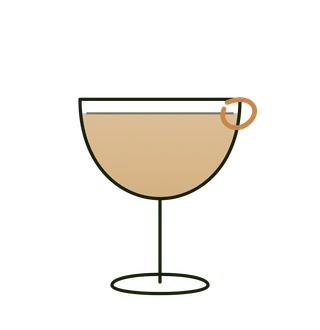
Sidecar by Martell Cognac 325
Prague The sidecar is any cocktail traditionally made with cognac, orange liqueur, plus lemon juice.Sidecar je jakýkoli koktejl tradičně vyrobený z koňaku, pomerančového likéru a citronové šťávySidecar- це будь-який коктейль, який традиційно готується з коньяком, апельсиновим лікером і лимонним соком.
-

Skinny Bitch by Nemiroff Delikat 295
-
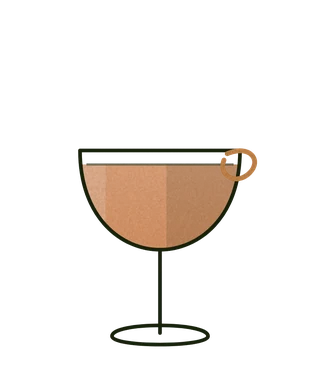
El Presidente 295
The El Presidente cocktail is a Cuban alcoholic drink made of australian dry spiced rum Cargo Cult, orange curaçao, vermouth, and grenadine.Koktejl El Presidente je kubánský alkoholický nápoj vyrobený z rumu, pomerančového curaçaa, vermutu a grenadiny. Původní recept vyžaduje blanc vermutcuracao vermouth, and grenadine.Коктейль «El Presidente» — кубинський алкогольний напій з рому, апельсинового кюрасао, вермуту та гренадину.
-
Bloody Mary 359
a little tomato juice, freshly squeezed orange, lime, add hot Valentina sauce, ginger beer and finish with a spicy, not spicy, strong Mexican liqueur based on green chili pepperstrochu rajčatové šťávy, čerstvě vymačkaný pomeranč, limetka, přidejte pálivou omáčku Valentina, zázvorové pivo a zakončete pikantním, nepálivým, silným mexickým likérem na bázi zelených chilli papričekтрохи томатного соку, свіжовидавленого апельсина, лайма, додаємо гострий соус Валентина, імбирне пиво і фіналізуємо пряним, не гострим міцним мексиканським лікером на основі зеленого перцю чилі
-
Salty Dog by Nemiroff Delikat 305
Salty Dog English Experience the Salty Dog: crisp vodka meets vibrant natural grapefruit soda and subtle maraschino liqueur . Finished with a salt rim for perfect balance. Pure, zesty refreshment. Czech UkrainianPoznejte Salty Dog: svěží vodka se snoubí s živou přírodní grepovou limonádou a jemným Maraschino likérem. Dokončeno solným okrajem pro dokonalou rovnováhu. Čisté, pikantní osvěžení.Спробуйте Salty Dog: якісна горілка поєднується з яскравим натуральним грейпфрутовим лимонадом та витонченим лікером Мараскіно. Завершує смак сольовий обідок для ідеального балансу. Чисте, пікантне освіження.
-
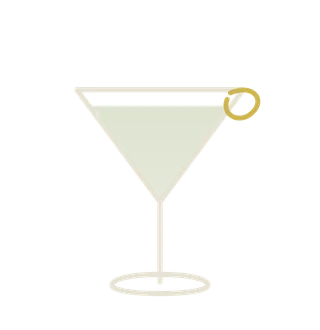
Bergamot Dry Martini by Italicus 299
classic dry martini, but with the addition of Italian bergamot liqueur Italicusklasické suché martini, ale s přídavkem italského bergamotového likéru Italicusкласичний сухий мартіні, але з додаванням італійського бергамотового лікеру Італікус
-
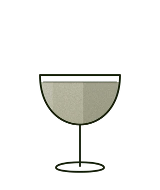
Pisco Sour 285
Peruvian pisco shaken with lime, sugar and egg white, with bitters across the foam. Sharp, soft and a little floral.Peruánské pisco protřepané s limetkou, cukrem a bílkem, na pěně kapky bitteru. Ostré, hebké a lehce květinové.Перуанське піско, збите з лаймом, цукром і білком, на піні — краплі бітеру. Гостро, м'яко і трохи квітково.
-
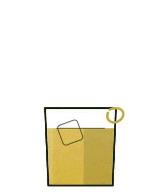
Yellow Negroni 295
summer gin, dry vermouth and liqueur Suze lOriginale is one of the oldest aperitifs from France, which today is a national treasure of the country. The liqueur is made from gentian infusion, alpine herb extracts and concentrated apple juice.letní gin, suchý vermut a likér Suze lOriginale je jedním z nejstarších aperitivů z Francie, který je dnes národním pokladem země. Likér se vyrábí z nálevu z hořce, výtažků z alpských bylin a koncentrované jablečné šťávy.літній джин, сухий вермут та лікер Suze lOriginale – це один із найстаріших аперитивів із Франції, який сьогодні є національним надбанням країни. Лікер виготовляють з настою тирличу, екстрактів альпійських трав та концентрованого яблучного соку.
-
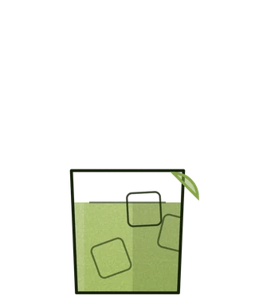
Caipirinha 299
Brazil's own: cachaça over lime crushed with sugar, poured onto its own ice. Blunt and refreshing.Brazilská klasika: cachaça na limetku rozdrcenou s cukrem, nalitá na vlastní led. Přímočará a osvěžující.Бразильська класика: кашаса на лайм, розтертий із цукром, і лід просто зверху. Прямолінійно й освіжає.
-
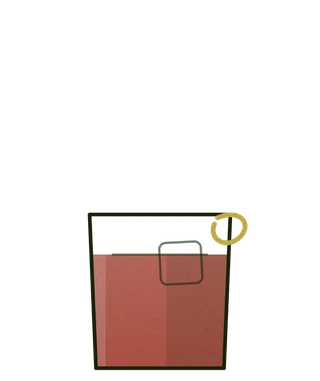
Bitter Giuseppe 265
the Bitter Giuseppe Built along Manhattan lines, this digestif cocktail features the bitter artichoke-based amaro Cynar. The richness of the sweet vermouth balances the lush, vegetal bitterness of the Cynar.The orange bitters and the brightness of the few drops of lemon juice and the spray of lemon oil cut through the almost oily, unctuous texture on your tongue, allowing the more subtle, underlying spices to come out Hořký Giuseppe Tento digestivní koktejl, postavený podle manhattanských linií, obsahuje amaro Cynar na bázi hořkého artyčoku. Bohatost sladkého vermutu vyvažuje svěží, rostlinnou hořkost Cynar. Pomerančová hořkost a jas několika kapek citronové šťávy a spreje citronového oleje proříznou téměř mastnou mastnou texturu na vašem jazyku a umožní vyniknout jemnějším kořením.Гіркий Джузеппе Цей дижестивний коктейль, створений за принципом Манхеттена, містить гіркий амаро Cynar на основі артишоку. Насиченість солодкого вермуту врівноважує пишну рослинну гірчинку Cynar. Апельсинова гіркота та яскравість кількох крапель лимонного соку та бризок лимонної олії розрізають майже маслянисту, маслянисту текстуру вашого язика, дозволяючи вийти більш тонким основним прянощам
-
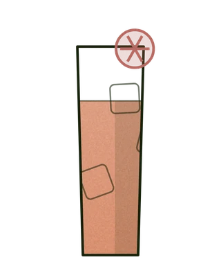
Paloma 299
Refreshing and vibrant, the Paloma is your perfect escape. Made with tequila, grapefruit soda, and a squeeze of lime. Simple, classic, and always a good idea.Osvěžující a živá, Paloma je váš dokonalý únik. Vyrobena z tequily, grapefruitové sody a kapky limetky. Jednoduchá, klasická a vždy dobrý nápad.Освіжаюча та яскрава, Палома – ваш ідеальний відпочинок. Зроблена з текіли, грейпфрутової содової та краплі лайма. Проста, класична і завжди гарна ідея.
-
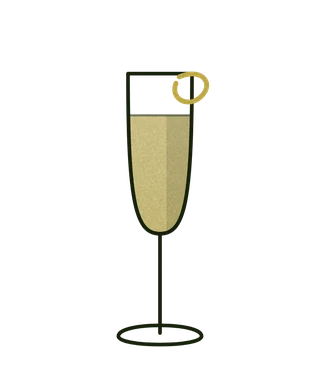
French75 295
French 75 is a cocktail made from gin, champagne, lemon juice, and sugar. It is also called a 75 cocktail, or in French simply a soixante quinze ('seventy five').French 75 je koktejl vyrobený z ginu, šampaňského, citronové šťávy a cukru. Také se mu říká koktejl 75, nebo ve francouzštině jednoduše soixante quinze („sedmdesát pět“).Френч 75 – це коктейль, приготований з джину, шампанського, лимонного соку та цукру. Його також називають коктейлем 75, або французькою просто soixante quinze («сімдесят п'ять»).
-
Dolce Amaro Bittersweet 295
Sip on sophistication with the Dolce Amaro . This exquisite cocktail blends the dry notes of vermouth with the bittersweet embrace of Campari and the rich almond warmth of Adriatico Amaretto. It's like a Mediterranean sunset in a glass – perfect for unwinding and savoring the moment. Vychutnejte si sofistikovanost s koktejlem Dolce Amaro .Tento vynikající nápoj spojuje suché tóny vermutu s hořkosladkým objetím Campari a bohatou mandlovou hřejivostí Adriatico Amaretto. Je to jako středomořský západ slunce ve sklenici – ideální pro relaxaci a vychutnání si okamžiku.Насолоджуйтесь витонченістю з коктейлем Dolce Amaro . Цей вишуканий напій поєднує сухі нотки вермуту з гірко-солодкими обіймами Campari та насиченою мигдальною теплотою Adriatico Amaretto. Це ніби середземноморський захід сонця у склянці – ідеально для відпочинку та насолоди моментом.
-
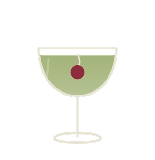
Last Word 355
A classic cocktail of Nordes dry gin, green Chartreuse liqueur, Maraschino liqueur, and lime juice, which originated in Detroit in the early 20th century.Klasický koktejl ze suchého ginu Nordes, zeleného likéru Chartreuse, likéru Maraschino a limetkové šťávy, který vznikl v Detroitu na počátku 20. století.Класичний коктейль із сухого джину Nordes, зеленого лікеру Chartreuse, лікеру Maraschino та соку лайма, який зявився у Детройті на початку 20 століття.
-
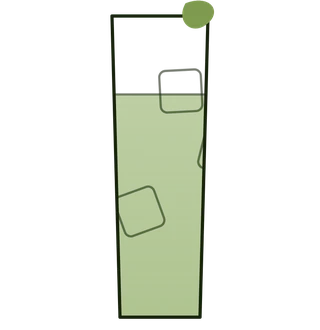
Green Deacon 349
### English Green Deacon A dry and refreshing contrast of London Dry and Sloe gin, balancing tart pink grapefruit with a subtle whisper of absinthe. Flavor: Citrusy, herbal, bittersweet.Čeština Green Deacon Suchý a osvěžující kontrast londýnského a trnkového ginu, kde se snoubí kyselost růžového grapefruitu s jemnou, sotva znatelnou kapkou absintu. Chuť: Citrusová, bylinná, hořkosladká.Українська Green Deacon Сухий та освіжаючий контраст лондонського та тернового джину, де кислинка рожевого грейпфрута ідеально збалансована ледь помітною краплею абсенту. Смак: Цитрусовий, трав'яний, гіркувато-солодкий.
-
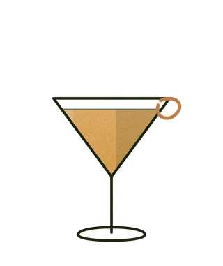
Breakfast Martini 305
Breakfast Martini A sophisticated blend of gin, orange marmalade, and a bold cognac-based orange liqueur. The definitive liquid breakfast.Breakfast Martini Sofistikovaný mix ginu, marmelády a silného pomerančového likéru na koňaku. Dokonalá tekutá snídaně.Breakfast Martini Вишуканий мікс джину, мармеладу та міцного апельсинового лікеру на коньяку. Твій ідеальний «рідкий сніданок».
-
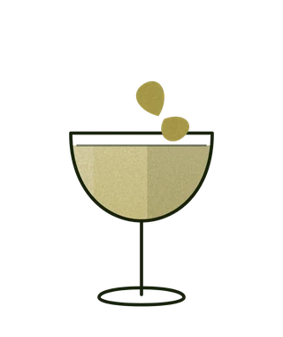
Pinnaple Daiquiri 299
Banana Daiquiri Base Spirit:Cargo Cult — a dry and spiced Australian rum. Preparation: The rum is macerated with mountain bananas from Queensland, Australia. These naturally less sweet bananas provide a rich aroma and flavor without excess sugar. Ingredients: Cargo Cult Spiced Rum (macerated with Queensland bananas), fresh lime juice, smoked Demerara syrup (brown cane sugar). Profile: Dry, spiced, with a pronounced banana character and subtle smoky notes. Banana DaiquiriBanana Daiquiri Základ: Cargo Cult — suchý a kořeněný australský rum. Příprava: Rum je macerován s horskými banány z Queenslandu (Austrálie). Tyto banány jsou přirozeně méně sladké, dodávají nápoji bohaté aroma a chuť bez nadměrné sladkosti. Složení: Kořeněný rum Cargo Cult (macerovaný s queenslandskými banány), čerstvá limetková šťáva, sirup z uzeného třtinového cukru Demerara. Profil: Suchý, kořeněný, s výrazným banánovým charakterem a lehkými kouřovými tóny.Основа: Cargo Cult — сухий та пряний австралійський ром. Приготування: Ром мацерується на гірських бананах з Квінсленда (Австралія). Ці банани від природи менш солодкі, тому надають напою багатий аромат і смак без зайвої солодкості. Склад: Пряний ром Cargo Cult (мацерований на квінслендських бананах), свіжий сік лайма, сироп із підкопченого тростинного цукру демерара. Профіль: Сухий, пряний, з вираженим банановим характером та легкими димними нотами.
-
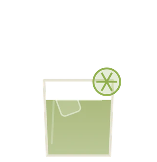
Mezcalita vida 465
-
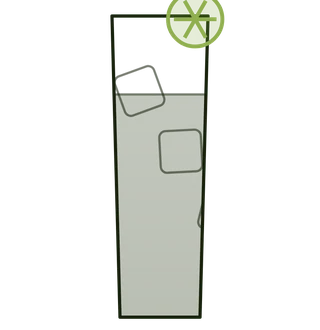
Skiny beatch 265
-
Scapegrace Black Gin 41.6% New Zealand +TH Tonic 395
SCAPEGRACE Black Gin Hello darkness my old friend. In nature, Black has a flavour. A fluent autograph stroked with the ink of specifio organic plants, flowers and berries. This is that flavour. This is the taste of Black.
-

Citadelle Gin Original 44,0 %+ TH Tonic 295
English Citadelle Original: The Pioneer of French Craft Gin. The first French craft gin, born in 1996 in the heart of Grande Champagne. A flawless balance of juniper, citrus, and exotic spices. The Core: Juniper berries grown and strictly controlled directly at Château de Bonbonnet. The Formula: French wheat distillate + 19 distinct botanicals (including cardamon, cubeb pepper, grains of paradise, and violet petals). The Process: Patented progressive maceration and a single distillation in small 25 hL copper pot stills. Profile: Delicate fresh flowers and citrus on the nose, opening up to a bold, peppery, and spicy palate. Elegant, round, and refined finish. #citadellegin #originalgin #craftgin #praguebar #barlife #citadellegin #gintonic #remeslnygin #barpraha #praguebarČeština Citadelle Original: Průkopník francouzského řemeslného ginu. První francouzský řemeslný gin, představený v roce 1996 v srdci regionu Grande Champagne. Dokonalá rovnováha jalovce, citrusů a exotického koření. Základ: Jalovec pěstovaný pod přímou kontrolou přímo před zámkem Château de Bonbonnet. Složení: Pšeničný destilát + 19 rostlinných ingrediencí (včetně kardamomu, pepře kubéba, rajských zrn a květů fialek). Výroba: Patentovaná postupná macerace a následná single destilace v malých 25hL měděných kotlích. Profil: Jemná vůně čerstvých květin a citrusů, která na patře přechází do výrazných tónů pepře a koření. Elegantní, kulatý a vytříbený závěr.Українська Citadelle Original: Піонер французького крафтового джину. Перший французький крафтовий джин, створений у 1996 році в самому серці Grande Champagne. Ідеальний баланс ялівцю, цитрусів та екзотичних прянощів. Основа: Ягоди ялівцю вирощуються під максимальним контролем безпосередньо біля замку Château de Bonbonnet. Склад: Пшеничний дистилят + 19 рослинних компонентів (серед яких кардамон, перець кубеба, райські зерна та пелюстки фіалки). Технологія: Запатентована прогресивна мацерація та єдина дистиляція в малих 25-гектолітрових мідних кубах. Профіль: Ніжний аромат свіжих квітів та цитрусів, який на піднебінні розкривається яскравими перцевими та пряними нотами. Елегантний, округлий та витончений посмак.
-
Del Maguey Mezcal Vida 40 ml Mexico» 400
Espadín agave from San Luis del Río in Oaxaca, roasted over wood. Smoke first, then green fruit underneath.Agáve espadín ze San Luis del Río v Oaxace, pečené nad dřevem. Nejprve kouř, pod ním zelené ovoce.Агава еспадін із Сан-Луїс-дель-Ріо в Оахаці, печена на дровах. Спершу дим, під ним — зелений фрукт.
-

Montelobos Mezcal artesanal Mexico 385
Organic espadín from Oaxaca, made the artisanal way. Drier and more herbal than it is smoky.Organické espadín z Oaxaky, vyrobené řemeslně. Sušší a bylinnější, než je kouřové.Органічний еспадін з Оахаки, зроблений ремісничо. Сухіший і трав'яніший, ніж димний.
-

Ole Smoky Mango Habanero Whiskey 35% USA 299
ENGLISH Ole Smoky Mango Habanero Sweet tropical mango meets a sharp habanero kick. Smooth Tennessee whiskey with a slow-burning finish. Dangerously drinkable. Unforgettable.ČEŠTINA Ole Smoky Mango Habanero Sladké mango, ostrý dotek habanera. Jemná whiskey z Tennessee s hřejivým dozvukem. Nečekaná. Návyková.УКРАЇНСЬКОЮ Ole Smoky Mango Habanero Солодке манго й пекучий хабанеро. М’який теннесійський віскі з довгим гарячим фінішем. Сміливий смак, який запам’ятовується.
-
Laphroaig Oak Select 40% 40 ml 299
## English Intense, smoky, and complex. A perfect balance of peat smoke, medicinal notes, and sweet oak. Rich flavors of seaweed, vanilla, and a hint of spice, leading into a long, dry, and distinctly smoky finish. A versatile, signature peated base for our premium whiskey cocktails.Laphroaig Oak Select (40%) A classic Islay single malt Scotch whisky matured in a selection of five distinct casks: Oloroso Sherry, American White Oak, Pedro Ximénez, Quarter Cask, and Bourbon. Čeština Laphroaig Oak Select (40%) Klasická Islay single malt skotská whisky zrající v pěti různých typech sudů: po Oloroso Sherry, americkém bílém dubu, Pedro Ximénez, Quarter Cask a Bourbonu. Intenzivní, kouřová a komplexní. Dokonalý balanc rašelinového kouře, medicínských tónů a sladkého dřeva. Bohatá chuť mořských řas, vanilky a jemného koření s dlouhým, suchým a výrazně kouřovým závěrem. Charakteristická rašelinová báze pro naše prémiové whisky koktejly.Українська Laphroaig Oak Select (40%) Класичний односолодовий шотландський віскі з острова Айла, витриманий у п'яти різних типах бочок: з-під хересу Олоросо, американського білого дуба, Педро Хіменеса, Quarter Cask та бурбону. Інтенсивний, торф'яний та комплексний. Ідеальний баланс насиченого диму, медичних нот та солодкого дуба. Багатий смак морських водоростей, ванілі й легких прянощів із довгим, сухим та виразно димним фінішем. Характерна торф'яна база для наших преміальних коктейлів на віскі.
-
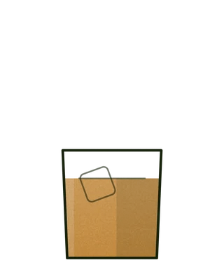
Bushmills Irish single malt whisky 10YO Ireland 255
Irish single malt, distilled three times and ten years in bourbon and sherry casks. Honey, orchard fruit, no smoke.Irský single malt, třikrát destilovaný a deset let v bourbonových a sherry sudech. Med, sadové ovoce, žádný kouř.Ірландський сингл молт, тричі дистильований, десять років у бочках з-під бурбону та хересу. Мед, садовий фрукт, без диму.
-
Cachaca Magnifica 40% Brasil 255
## English Clean, vibrant, and aromatic with distinct notes of fresh tropical fruits, green grass, and a hint of spice. Taste the true vibrant energy of Brazil. Crafted using traditional copper pot stills, this premium Cachaça offers a remarkably smooth and crisp profile with rich sugarcane notes and a subtle herbaceous finish. The ultimate, authentic choice for a flawless, world-class Caipirinha.Cachaça Magnífica Tradicional (40%) An authentic, premium Brazilian spirit distilled from fresh sugarcane juice and aged in traditional Ipê wood casks. Čeština Cachaça Magnífica Tradicional (40%) Autentický, prémiový brazilský destilát z čerstvé šťávy cukrové třtiny, stařený v tradičních sudech ze dřeva Ipê. Čistá, živá a aromatická chuť s výraznými tóny tropického ovoce, zelené trávy a jemného koření. Zažijte skutečnou energii Brazílie. Tato prémiová Cachaça, vyráběná tradiční destilací v měděných kotlích, nabízí mimořádně jemný a svěží profil s bohatou chutí cukrové třtiny a lehkým bylinným závěrem. Naprosto autentická volba pro dokonalou a prvotřídní Caipirinhu.Українська Cachaça Magnífica Tradicional (40%) Автентичний преміальний бразильський міцний напій із чистого соку цукрової тростини, витриманий у традиційних бочках із дерева Іпе. Чистий, яскравий та ароматний смак із виразними нотами тропічних фруктів, свіжої трави та легких прянощів. Відчуйте справжню енергію Бразилії. Ця преміальна кашаса, створена шляхом традиційної дистиляції в мідних кубах, має надзвичайно м'який та освіжаючий профіль із насиченими тростинними тонами та легким трав'янистим посмаком. Ідеальний та автентичний вибір для бездоганної Кайпіріньї світового рівня.
-

Tiki Lovers Pineapple 255
## English Tiki Lovers Pineapple (45%) A premium Caribbean rum blend created in Germany by the founders of The Bitter Truth. It combines heavy, funk-forward Jamaican pot still rums with select spirits from Barbados, Trinidad, and Guyana, naturally infused with real South American pineapple extract. An uncompromising spirit crafted for true complexity. This exceptional blend brings together the finest Caribbean rums, meticulously married and bottled in Germany. Infused purely with 100% natural South American pineapple extract—completely free from artificial syrups—it delivers an authentic, bold tropical punch balanced by a powerful sugarcane body and complex esters.Čeština Tiki Lovers Pineapple (45%) Prémiový blend karibských rumů vytvořený v Německu zakladateli značky The Bitter Truth. Kombinuje těžké jamajské pot still rumy se spiritis z Barbadosu, Trinidadu a Guyany, přirozeně infuzované reálným extraktem z jihoamerických ananasů. Nekompromisní rum stvořený pro skutečnou komplexnost chuti. Tento jedinečný blend spojuje nejlepší karibské destiláty, které se míchají a lahvují v Německu. Díky infuzi 100% přírodního ananasového extraktu z Jižní Ameriky — bez jakýchkoli umělých sirupů — nabízí autentickou chuť zralého ovoce vyváženou silným tělem a divokým charakterem.Українська Tiki Lovers Pineapple (45%) Преміальний купаж карибських ромів, створений у Німеччині засновниками бренду The Bitter Truth. Поєднує важкі ямайські роми кубової дистиляції зі спиртами з Барбадосу, Тринідаду та Гаяни, природно настояними на справжньому екстракті південноамериканського ананаса. Безкомпромісний алкоголь, створений задля справжньої глибини смаку. Цей унікальний бленд об'єднує найкращі карибські спирти, які змішуються та розливаються в Німеччині. Завдяки настоюванню на 100% натуральному екстракті південноамериканського ананаса — без жодних штучних сиропів чи хімії — напій вибухає автентичним тропічним смаком та потужним міцним характером.
-
Cargo Cult Banana Spiced Rum 38 % 305
Australian rum macerated with mountain bananas and spice. Dry for a spiced rum — the banana is aroma, not sugar.Australský rum macerovaný s horskými banány a kořením. Na kořeněný rum suchý — banán je ve vůni, ne v cukru.Австралійський ром, мацерований на гірських бананах і спеціях. Як на пряний ром — сухий: банан у ароматі, а не в цукрі.
-

Centenario „ Aňejo ” aged 9Yo Costa Rican rum 40% 40 ml 285
## English Ron Centenario Añejo 9 YO (40%) A premium Costa Rican rum aged for 9 years in select oak barrels. Smooth and sweet with a well-balanced profile of rich caramel, vanilla, and soft oak notes. Discover the pure taste of Costa Rica. Aged for 9 years in the tropical climate, this exceptional rum offers a rich, sweet character packed with notes of brown sugar, vanilla, and a touch of spice. Perfect for slow sipping or enhancing premium drinks.Čeština Ron Centenario Añejo 9 YO (40%) Prémiový kostarický rum stařený 9 let v lanyžových dubových sudech. Jemný a sladký s dokonale vyváženým profilem bohatého karamelu, vanilky a jemných tónů dřeva. Objevte čistou chuť Kostariky. Tento výjimečný rum, stařený 9 let v tropickém klimatu, nabízí bohatý, sladký charakter s výraznými tóny třtinového cukru, vanilky a jemného koření. Ideální k pomalému popíjení nebo do prémiových drinků.Українська Ron Centenario Añejo 9 YO (40%) Преміальний костариканський ром, витриманий протягом 9 років у відбірних дубових бочках. М'який та солодкий, із чудово збалансованим профілем насиченої карамелі, ванілі та легких нот дуба. Відкрийте для себе чистий смак Коста-Ріки. Цей винятковий ром, витриманий 9 років у тропічному кліматі, має багатий, солодкий характер із виразними нотами тростинного цукру, ванілі та легких прянощів. Ідеально підходить для смакування в чистому вигляді або як основа для преміальних міксів.
-
Platation Aged Dark Barbados 40% 40 ml 255
Aged Barbados rum, dark and round, with cane sugar and oak carried through it.Zrálý barbadoský rum, tmavý a kulatý, s třtinovým cukrem a dubem.Витриманий барбадоський ром, темний і округлий, з тростиновим цукром і дубом.
-

FLOR DE CANA EXTRA DRY RUM 4y 225
## English Flor de Caña Extra Seco 4 YO (40%) A premium, crystal-clear light Nicaraguan rum naturally aged for 4 years and charcoal-filtered for ultimate smoothness. Light-bodied, dry, and clean with subtle notes of vanilla, sweet almonds, and white chocolate. Sustainably crafted at the base of an active volcano, this 4-year-old white rum is completely sugar-free yet remarkably smooth. Its dry and crisp profile features delicate hints of vanilla and toasted coconut, making it the ultimate clean base for refreshing summer serves and premium mixers.Čeština Flor de Caña Extra Seco 4 YO (40%) Prémiový, křišťálově čistý lehký nikaragujský rum, přirozeně stařený 4 roky a filtrovaný přes dřevěné uhlí pro maximální jemnost. Lehké tělo, suchý a čistý profil s jemnými tóny vanilky, sladkých mandlí a bílé čokolády. Tento čtyřletý bílý rum, vyrobený udržitelným způsobem na úpatí aktivní sopky, neobsahuje žádný přidaný cukr, a přesto je výjimečně jemný. Jeho suchý a svěží charakter s elegantními podtóny vanilky a kokosu z něj dělá dokonalý, čistý základ pro osvěžující letní drinky a prémiové mixy.Українська Flor de Caña Extra Seco 4 YO (40%) Преміальний, кришталево прозорий легкий нікарагуанський ром, витриманий протягом 4 років та відфільтрований через деревне вугілля для максимальної м'якості. Легке тіло, сухий і чистий смак із тонкими нотами ванілі, солодкого мигдалю та білого шоколаду. Створений екологічним способом біля підніжжя діючого вулкана, цей 4-річний білий ром взагалі не містить цукру, але вражає своєю м'якістю. Його сухий, освіжаючий профіль із делікатними натяками на ваніль та кокос робить його ідеальною чистою основою для освіжаючих літніх міксів та преміальних лонг-дрінків.
-

Lustau Amontilado Jerez ,40 ml Spain 165
Amontillado from Jerez: sherry aged first under flor and then in air. Bone dry, nutty, salty at the finish.Amontillado z Jerezu: sherry zrající nejprve pod flor a pak na vzduchu. Dokonale suché, oříškové, v závěru slané.Амонтільядо з Хереса: витримка спершу під флором, потім на повітрі. Абсолютно сухе, горіхове, із солоним фінішем.
-
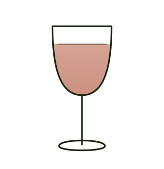
Picon (apéritif) 40 ml 18 % ABV France 225
It is made from a base of fresh oranges which are dried and mixed with a solution of alcohol which is distilled. Picon also contains gentian and Cinchona in equal measures.Picon is a caramel-coloured, flavoured bitters[1] drunk as an apéritif, which traditionally accompanies beer in the east and north of France. Picon je karamelová hořká limonáda, která se pije jako aperitiv a tradičně se podává k pivu na východě a severu Francie. Vyrábí se ze základu čerstvých pomerančů, které se usuší a smíchají s roztokem destilovaného alkoholu. Picon také obsahuje hořec a chininovku ve stejném množství.Пікон — це карамельний гіркий напій, який п'ють як аперитив і традиційно подають до пива на сході та півночі Франції. Його виготовляють з основи зі свіжих апельсинів, які висушують та змішують з розчином дистильованого спирту. Пікон також містить тирлич та хінну траву в рівних кількостях.
-
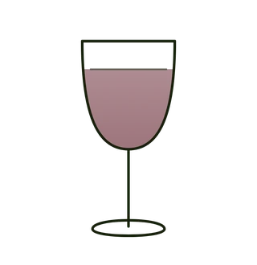
PORTWEIN GRAHAMS TAWNY 40ml 175
Tawny port from the Douro, aged in wood until the fruit turns to nuts and dried figs.Tawny portské z Doura, zrálé ve dřevě, až se ovoce promění v ořechy a sušené fíky.Тоні-порт із Дору, витриманий у деревині, доки фрукт не стане горіхом і сушеним інжиром.
-

White wine 200ml Italy 200
-
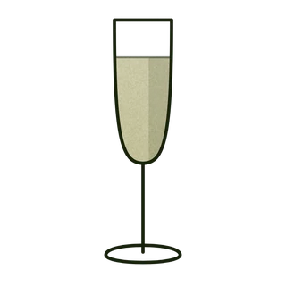
Jaume Serra Cava Brut 200 ml Spain 200
Spanish cava, brut, bottle-fermented. Green apple and bread, a fine bead.Španělská cava, brut, kvašená v lahvi. Zelené jablko a chléb, jemné perlení.Іспанська кава, брют, бродіння в пляшці. Зелене яблуко і хліб, дрібна перлина.
-
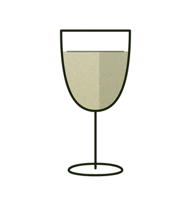
Graham's Tawny Porto 10YO 275
Ten years in wood. Walnut, dried apricot and caramel, and a finish that holds.Deset let ve dřevě. Vlašský ořech, sušená meruňka a karamel, se závěrem, který drží.Десять років у деревині. Волоський горіх, сушений абрикос і карамель, із довгим фінішем.
-

Cynar 40ml Italy 195
The spirit's name comes from cynarin, an acid found in artichokes believed to aid digestion. Any actual artichoke flavor is subtle, though. Cynar's flavor vegetal, earthy, bitter, herbaceous yet sweet.Jméno ducha pochází z cynarinu, kyseliny obsažené v artyčokech, o kterých se předpokládá, že napomáhá trávení. Jakákoli skutečná chuť artyčoku je však jemná. Chuť Cynar je rostlinná, zemitá, hořká, bylinná a přesto sladká.Назва алкоголю походить від цинарину, кислоти, яка міститься в артишоках, і вважається, що вона сприяє травленню. Однак будь-який справжній смак артишоку є тонким. Смак Cynar рослинний, земляний, гіркий, трав'янистий, але солодкий.
-

AMARETTO ADRIATICO ROASTED/ 28% Alc/ 40ml Italy 295
ADRIATICO is a new generation of amaretto liqueurs made with real almonds from Puglia - Italy. Certifikace VEGAN OKRoasted & distilled « Filippo Cea » almonds from PugliaUnique liqueur made with natural ingredientsLess sweet compared to traditional amaretto liqueursCoffee and cinnamon infusionsA pinch of sea salt from the Adriatic seaVEGAN OK CertificationMultiple award winner liqueur ADRIATICO je nová generace likérů amaretto vyrobených z pravých mandlí z Apulie - Itálie. Pražené a destilované mandle « Filippo Cea » z Puglie Jedinečný likér vyrobený z přírodních ingrediencí Méně sladké ve srovnání s tradičními likéry amaretto Kávové a skořicové nálevy Špetka mořské soli z Jaderského moře Mnohonásobně oceněný likérADRIATICO - нове покоління лікерів амаретто, виготовлених зі справжнього мигдалю з Апулії - Італія. Смажений і дистильований мигдаль «Filippo Cea» з Апулії Унікальний лікер, виготовлений з натуральних інгредієнтів Менш солодкий у порівнянні з традиційними лікерами амаретто Настої кави та кориці Щіпка морської солі з Адріатичного моря Сертифікація VEGAN OK
-

Grande Absente 255
Absinthe with wormwood, anise and herbs. Strong, and best with cold water poured slowly over it.Absint s pelyňkem, anýzem a bylinami. Silný, nejlepší s pomalu přilévanou studenou vodou.Абсент із полином, анісом і травами. Міцний, найкраще — з повільно долитою холодною водою.
-

Mozart White Chocolate 40ml Austria 255
Austrian cream liqueur of white chocolate and vanilla. Thick, sweet, for the end of the evening.Rakouský krémový likér z bílé čokolády a vanilky. Hustý, sladký, na konec večera.Австрійський вершковий лікер із білого шоколаду і ванілі. Густий, солодкий — на кінець вечора.
-

Drambuie The Isle of Skye Liqueur 40ml Scotland 245
Scotch whisky with heather honey, herbs and spice. Warm and sweet, drunk neat or over ice.Skotská whisky s vřesovým medem, bylinami a kořením. Teplý a sladký, čistý nebo s ledem.Шотландський віскі з вересовим медом, травами і спеціями. Теплий і солодкий — чистим або з льодом.
-

Ancho Reyes Verde 40% 40 ml Mexico 310
Liqueur of early-picked poblano chillies from Puebla. Green and grassy first, heat afterwards.Likér z brzy sklízených chilli poblano z Puebly. Nejprve zeleno a tráva, teprve pak pálivost.Лікер із рано зібраного чилі поблано з Пуебли. Спершу зелень і трава, потім — гострота.
-

Ole Smoky Butter Pecan 17.5% Moonshine USA 255
ENGLISH Ole Smoky Butter Pecan Moonshine Rich roasted pecans, silky sweetness, Southern soul. Creamy, smooth, dangerously easy to love. Dessert — with an attitude.ČEŠTINA Ole Smoky Butter Pecan Moonshine Pražené pekany, máslová sladkost, americký jih. Krémový, hladký, svůdně jednoduchý. Tekutý dezert.УКРАЇНСЬКОЮ Ole Smoky Butter Pecan Moonshine Смажений пекан, вершкова солодкість, дух Півдня. Ніжний, оксамитовий, небезпечно смачний. Десерт у склянці.
-

Ole Smoky Butterscotch 20% USA 255
Tennessee moonshine liqueur, butterscotch. Sweet, low in strength, served cold.Moonshine likér z Tennessee, karamelový. Sladký, nízká síla, podává se studený.Муншайн-лікер із Теннессі, вершкова карамель. Солодкий, невисокої міцності, подається холодним.
-

Hayman's Sloe Gin 26% 40 ml United Kingdom 295
English Hayman’s Sloe Gin (26%) A traditional English liqueur. Wild sloe berries steeped in classic London Dry Gin for 4 months. Rich, fruity, and perfectly balanced with a touch of natural sugar. Wild English sloe berries + 4 months of steeping in London Dry Gin = the perfect balance of rich fruit and classic botanicals. Discover the taste of tradition in every sip. Ochutnejte tradici. vlČeština Hayman’s Sloe Gin (26%) Tradiční anglický likér. Divoké trnky infuzované v London Dry Ginu po dobu 4 měsíců. Bohatá ovocná chuť s jemným dotekem přírodního cukru. Instagram Cap Divoké anglické trnky a 4 měsíce trpělivého macerování v prvotřídním London Dry Ginu. Výsledkem je dokonale vyvážený, bohatý ovocný likér s britským rodokmenem.Українська Online Menu Hayman’s Sloe Gin (26%) Традиційний англійський лікер. Дикі ягоди терену, що настоюються на класичному London Dry Gin протягом 4 місяців. Багатий фруктовий смак із легким натяком на природний цукор. Дикий англійський терен та 4 місяці витримки у класичному London Dry Gin. Результат? Ідеальний баланс насиченого фруктового смаку та британських традицій у вашому келиху. Спробуйте класику в новій формі.
-

SOUTHERN COMFORT WHISKY LIQUEUR 40 ml USA 245
## English Southern Comfort (35%) A unique, sweet American liqueur blending whiskey with fruit and spice accents. Distinct notes of sweet stone fruits, peach, orange, and warm vanilla. The spirit of New Orleans. Southern Comfort is a smooth, sweet, and unique blend of whiskey, fruit, and spice flavors. A timeless classic with bold notes of sweet peach, apricot, and vanilla that goes perfectly on the ice or in your favorite cocktails.Čeština Southern Comfort (35%) Unikátní, sladký americký likér kombinující chuť whiskey, ovoce a koření. Výrazné tóny sladkých peckovin, broskví, pomeranče a hřejivé vanilky. Atmosféra New Orleans v každém doušku. Southern Comfort přináší dokonale jemnou, sladkou a jedinečnou kombinaci whiskey, ovocných tónů a koření. Nadčasová klasika s bohatou chutí sladkých broskví, meruněk a vanilky, která skvěle chutná na ledu i v koktejlech.Українська Southern Comfort (35%) Унікальний, солодкий американський лікер, що поєднує в собі ноти віскі, фруктів та спецій. Виразні тони солодких кісточкових фруктів, персика, апельсина та теплої ванілі. Дух Нового Орлеана у вашому келиху. Southern Comfort — це м'який, солодкий та неповторний мікс нот віскі, фруктів і прянощів. Вічна класика з яскравим акцентом солодкого персика, абрикоса та ванілі, яка ідеально смакує чистою з льодом або в основі коктейлів.
-
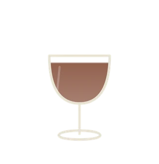
Pelinkovac+TH Tonic 299
Pelinkovac is a traditional Balkan herbal liqueur (digestif/bitter) made from wormwood and a blend of aromatic herbs. It is famous for its distinct herbal aroma, rich bitterness, and subtle sweet finish. Type: Herbal Liqueur / Bitter (Digestif) Key Ingredient: Wormwood (Artemisia absinthium) + selected herbs Flavor Profile: Bold herbal bitterness balanced with light sweetness, citrus zest, and spice notes Serving Suggestion: Serve well-chilled as a shot, on the rocks with a slice of lemon or lime, or mixed with tonic/colaČeština Pelinkovac je tradiční balkánský bylinný likér (hořká / digestiv) vyráběný z pelyňku a směsi aromatických bylin. Выznačuje se výraznou bylinnou vůní, charakteristickou hořkostí a jemně sladkým dozvukem. Typ nápoje: Bylinný likér / Hořká (Digestiv) Hlavní složka: Pelyněk (Artemisia absinthium) + směs horských bylin Chuťový profil: Výrazně bylinně hořký, vyvážený jemnou sladkostí с tóny citrusové kůry a koření Doporučení к podávání: Podávejte dobře vychlazené samostatně, s ledem a plátkem citronu nebo limetky, případně v kombinaci s tonikem či colouУкраїнська Пелинковаць (Pelinkovac) — популярний балканський гіркий лікер (аперитив) на основі полину та суміші духмяних трав. Поєднує глибокий трав'яний аромат, насичену гіркоту та легку солодкість у посмаку. Тип напою: Трав'яний лікер / Бітер (Аперитив) Основний інгредієнт: Полин (Artemisia absinthium) + комплекс гірських трав Смак: Виражений гіркувато-трав'яний, із нотами полину, цитрусової цедри та прянощів Як споживати: Охолодженим у чистому вигляді, з льодом та скибочкою лимона/лайма, або в міксах із тоніком
-

Nemiroff Original 40% 40 Ukraine 225
Ukrainian grain vodka, filtered clean. Neutral and cold, as it is meant to be.Ukrajinská obilná vodka, dočista filtrovaná. Neutrální a studená, jak má být.Українська зернова горілка, чисто фільтрована. Нейтральна і холодна, як і має бути.
-
Nemiroff Delikat 40% 40 ml Ukraine 225
The softer of the two: the same Ukrainian grain spirit, rounded off.Měkčí z dvojice: tentýž ukrajinský obilný destilát, zaoblený.М'якша з двох: той самий український зерновий спирт, тільки округлений.
-

Ararat 5 YO, 40% 40 ml Armenia 255
Armenian brandy, five years in oak. Dried fruit and vanilla, a little sweetness.Arménské brandy, pět let v dubu. Sušené ovoce a vanilka, špetka sladkosti.Вірменський бренді, п'ять років у дубі. Сухофрукти і ваніль, трохи солодощі.
-
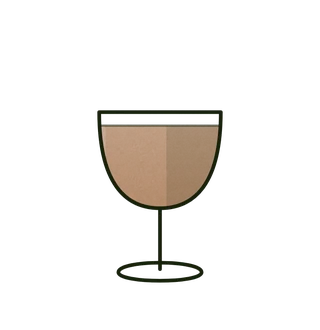
Martell VS 0,7l 40% 40 ml France 299
Cognac from the Charente, VS. Grape, oak and a short warm finish.Koňak z Charente, VS. Hrozen, dub a krátký teplý závěr.Коньяк із Шаранти, VS. Виноград, дуб і короткий теплий фініш.
-
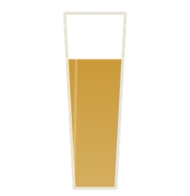
Pilsner Urquell 0,33l 155
The original pilsner, brewed in Plzeň since 1842. Bitter, bready, cold.Původní plzeň, vařená od roku 1842. Hořká, chlebová, studená.Той самий пілснер, звариться у Пльзені з 1842 року. Гіркий, хлібний, холодний.
-
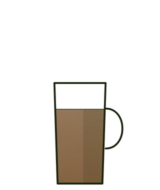
COFFE /TEA 60
Coffee, or a pot of tea. Ask what there is.Káva, nebo konvice čaje. Zeptejte se, co máme.Кава або чайник чаю. Запитайте, що є.
-
TOMAS HENRY TONIC 100ML 75
Dry tonic water, 100 ml, for topping a spirit.Suchý tonik, 100 ml, k dolití destilátu.Сухий тонік, 100 мл, щоб долити до напою.
-
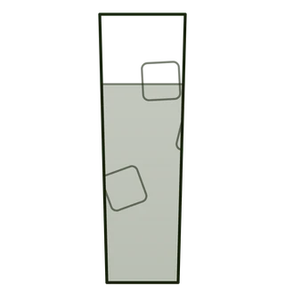
TOMAS HENRY TONIC BOTLE 99
Dry tonic water, full bottle.Suchý tonik, celá lahev.Сухий тонік, ціла пляшка.
-
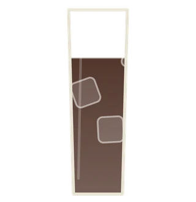
Coca Cola 99
Coca-Cola, cold.Coca-Cola, vychlazená.Coca-Cola, холодна.
-

NON-ALCOHOLIC NOGRONI 319
NON-ALCOHOLIC NEGRONI A sophisticated alcohol-free take on the classic Negroni. Bitter orange, herbal notes and a dry, bittersweet finish.Elegantní nealkoholická variace na klasické Negroni. Hořký pomeranč, bylinné tóny a suchý, hořkosladký závěr.Вишукана безалкогольна версія класичного Negroni. Гіркий апельсин, трав’янисті ноти та сухий, гіркувато-солодкий післясмак.
-
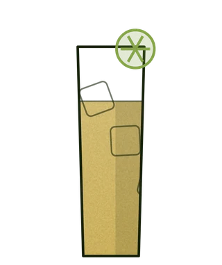
WHISKY SOUR 0.0 299
WHISKY SOUR 0.0 A silky alcohol-free Whisky Sour with notes of oak, vanilla and caramel, balanced by fresh lemon and aromatic bitters.Sametová nealkoholická variace na Whisky Sour s tóny dubu, vanilky a karamelu, vyvážená čerstvým citronem a aromatickými bitters.Оксамитова безалкогольна версія Whisky Sour з нотами дуба, ванілі та карамелі, збалансована свіжим лимоном та ароматичними bitters.
-
DAIQUIRI 0.0 299
A clean and refreshing alcohol-free Daiquiri. Tropical rum notes meet fresh lime for a bright, crisp finish.Čistá a osvěžující nealkoholická variace na Daiquiri. Tropické tóny rumu se spojují s čerstvou limetou a vytvářejí svěží, čistý závěr.Чиста та освіжаюча безалкогольна версія Daiquiri. Тропічні ноти рому поєднуються зі свіжим лаймом, створюючи яскравий та свіжий післясмак.
-

GIN BASIL SMASH 0.0 299
A vibrant alcohol-free Gin & Tonic with fresh lemon and basil. Crisp, botanical and intensely refreshing.Výrazná nealkoholická variace na Gin & Tonic s čerstvým citronem a bazalkou. Svěží, bylinná a intenzivně osvěžující.Яскрава безалкогольна версія Gin & Tonic зі свіжим лимоном і базиліком. Свіжа, ботанічна та надзвичайно освіжаюча.
-

BITTER ORANGE HIGHBALL 319
BITTER ORANGE HIGHBALL A bright and refreshing highball with bitter orange, herbal vermouth and premium tonic. Dry, complex and pleasantly bitter.Svěží highball s hořkým pomerančem, bylinným nealkoholickým vermutem a prémiovým tonikem. Suchý, komplexní a příjemně hořký.Освіжаючий хайбол з гірким апельсином, трав’янистим безалкогольним вермутом і преміальним тоніком. Сухий, комплексний і приємно гіркий.